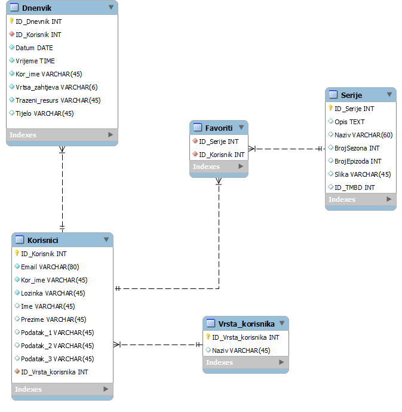

Ime: {{ authorInfo.ime }}
Prezime: {{ authorInfo.prezime }}
FOI e-mail: {{ authorInfo.email }}
Slika u manjoj veličini:
| Resurs | GET | POST | PUT | DELETE |
|---|---|---|---|---|
| {{ resource.url }} | {{ resource.get }} | {{ resource.post }} | {{ resource.put }} | {{ resource.delete }} |
| Uloga | Stranica/e | Opis |
|---|---|---|
| {{ role.name }} | {{ role.pages }} | {{ role.description }} |
| Zadatak | Implementirano |
|---|---|
| 1. Ažuriranje tablica za prvu zadaću | Nakon što sam saznao bodove preradio sam REST servise tako da sada rade ovi koji su gore navedeni, te je također tablica sa elementima za klijentsku stranu prerađena i poboljšana. |
| 2. Kreiranje tablice po koracima | Implementirano kao što se može vidjeti. |
| 3. Složiti package.json za pokretanje servera | Implementirano u potpunosti. |
| 4. Izbrisati ključeve za TMDB servis | Riješeno. |
| 5. Prijenos HTML, CSS, i JS u Angular sa TypeScript-om | Postoji klijentska strana za pretraživanje serija, pregled detalja serije, pregled profila, pregled svih korisnika, registraciju korisnika, ažuriranje korisnika, te odjavu i prikazivanje različite navigacije za različite korisnike. |
| 6. Pozadinski dio poslužuje kompajliranu verziju Angular aplikacije | Implementirano. |
| 7. Pozadinski dio poslužuje dokumentaciju | Nije implementirano. |
| 8. Pozadinski dio nudi podršku kao REST servis | Implementirano u potpunosti. |
| 9. Svi dijelovi osim inicialnog zahtijevaju JWT | Implementirano. |
| 10. Čitanje adrese iz environment datoteke | Implementirano. |
| 11. Dorada dizajna sa Sass preprocesorom | Implementirano. |
| 12. Dodavanje reCaptcha na obrasce | Implemnetirano. |
| 13. Dorada ažuriranja profila i dvorazinske autentifikacije | Nije implementirano. |
| 14. Dorada prijave s dvije razine autentifikacije | Nije implementirano. |
| 15. Dodavanje prijave preko GitHub računa | Implementirano. |
| 16. Spremanje favorita u local storage | Nije implementirano. |
| 17. Postojanje inicijalnog korisnika za svaku ulogu | Implementirano. |
| 18. Dodatni bodovi (npr. dodatna funkcionalnost) | Nije implementirano. |
{kind=link}